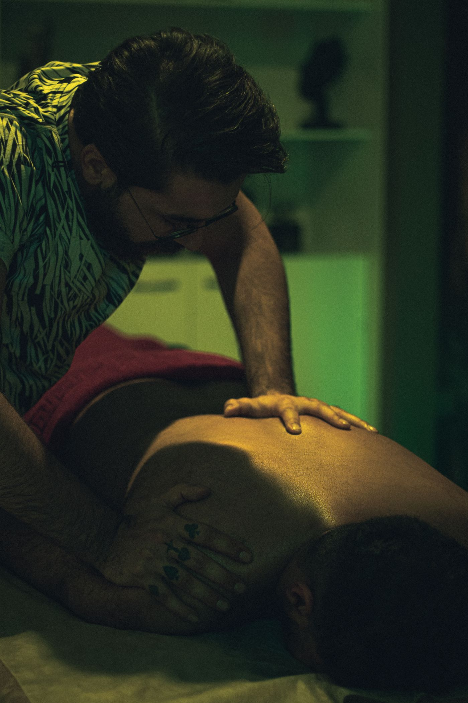
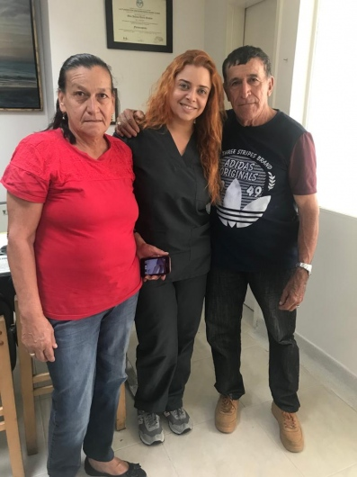

Tratamientos de fisioterapia y terapias complementarias en La Candelaria: rehabilitación, manejo del dolor y bienestar integral, con atención cercana.

Combino técnicas de fisioterapia convencional con terapias complementarias para tratar a la persona completa, no solo la lesión.
Valoración y tratamiento de lesiones musculares, articulares y posturales.
Técnicas de bienestar que potencian tu proceso de recuperación física.
Alivio de dolores crónicos de espalda, cuello y articulaciones.
Planes de ejercicio para mantener tu movilidad y prevenir recaídas.

Soy Juliana Torné Escobar, fisioterapeuta y terapeuta complementaria. Mi consultorio en el centro de Medellín es un espacio donde cada paciente recibe tiempo, escucha y un tratamiento a su medida.
"Detrás de cada dolor hay una historia. Mi trabajo es escucharla y ayudarte a escribirle un mejor final."Dra. Juliana Torné Escobar
Son técnicas de bienestar que se suman a la fisioterapia convencional para apoyar tu recuperación física y tu bienestar general, siempre con base profesional.
No es obligatoria. Puedes agendar tu valoración inicial directamente en línea a través de Doctoralia.
Entre 45 y 60 minutos, dedicados por completo a escuchar tu caso y trabajar en tu tratamiento.
En La Candelaria, en el centro de Medellín, de fácil acceso en transporte público.
Cra. 46 #54-14
La Candelaria, Medellín
Perfil en Doctoralia
Con cita previa
Agenda directamente en línea o encuéntranos en Google Maps.
📅 Agendar en Doctoralia 📍 Ver en Google Maps